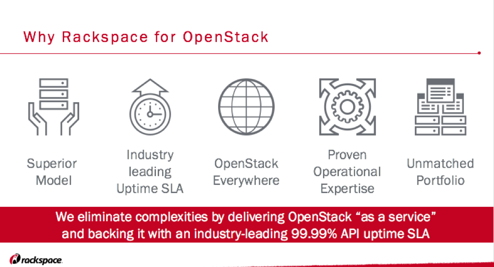

Why Rackspace#
We are the leading operator of OpenStack clouds and we provide an unmatched, industry-leading OpenStack private cloud solution.
- We eliminate the primary barrier to OpenStack adoption – complexity – by delivering OpenStack as a managed service. Our superior model – delivering OpenStack as a managed service – eliminates the challenges customers face when attempting to deploy and operate OpenStack on their own or when attempting to operate a complex and unreliable cloud deployed by another vendor. In addition to complexity, another barrier to OpenStack adoption is the lack of operational expertise in the industry – OpenStack engineers are expensive and difficult to find, hire and retain. We eliminate this talent gap and enable our customers to focus their IT resources on developing software and features for their customers (instead of managing infrastructure).
- We design, deploy and operate the most reliable OpenStack clouds in the world and we back them with an industry-leading 99.99% API uptime SLA.
- We can deploy OpenStack private clouds in your data center, ours, or
in a third-party location (colo.), running on your hardware or on
Rackspace managed infrastructure. The Rackspace managed
infrastructure option enables you to:
- Move from a CAPEX to an OPEX-based IT infrastructure expense model
- Rapidly respond to demand in different geographies
- Easily solve data sovereignty compliance requirements
- We have 100x more experience operating large scale OpenStack than anyone in the world. We’ve scaled OpenStack to 100,000’s of nodes, operate the world’s largest OpenStack cloud and manage OpenStack clouds for some of the largest companies in the world. Our operational experience and expertise is the reason we’re able to deliver the world’s best OpenStack API uptime guarantee and ensure your OpenStack cloud can scale to meet the ongoing needs of your business. We are the first provider to deploy OpenStack services in containers, which enabled us to eliminate the OpenStack “upgrade” barrier (moving from one OpenStack release to the next) by providing a non-disruptive, in-place upgrade path and enabling independent scaling of each OpenStack service.
- Rackspace offers an OpenStack product portfolio that no other provider can match. With one standard, one set of tooling, one set of APIs and one platform on which to train employees, customers can easily manage applications of all types, across all major deployment platforms. The Rackspace OpenStack platform includes OpenStack private clouds (located in a customer’s data center, 3rd party location, or hosted at Rackspace), the world’s largest OpenStack public cloud and hybrid cloud options (OpenStack private cloud in a customer’s data center connected to an OpenStack private cloud hosted at Rackspace; OpenStack private cloud connected to the Rackspace Public Cloud). Rackspace’s hybrid combination helps customers spin up workloads in multiple locations using the same tooling (e.g., Heat, CLI) and allows customers to adopt Active/Active design patterns for their applications.